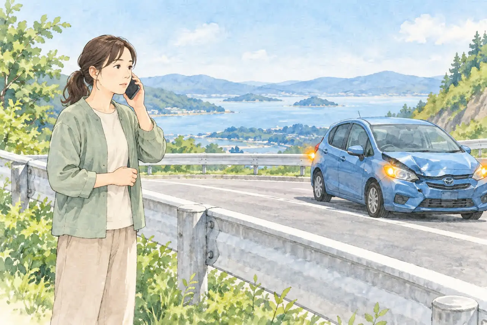
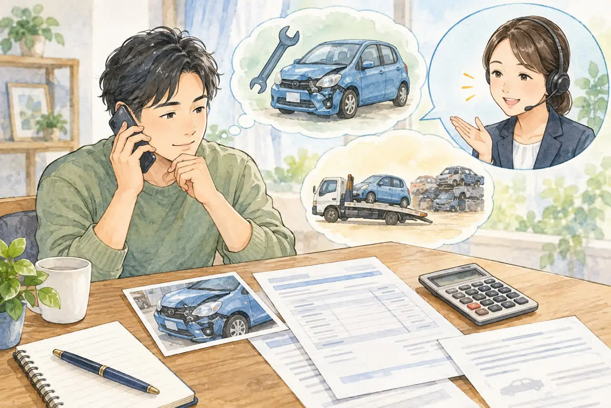
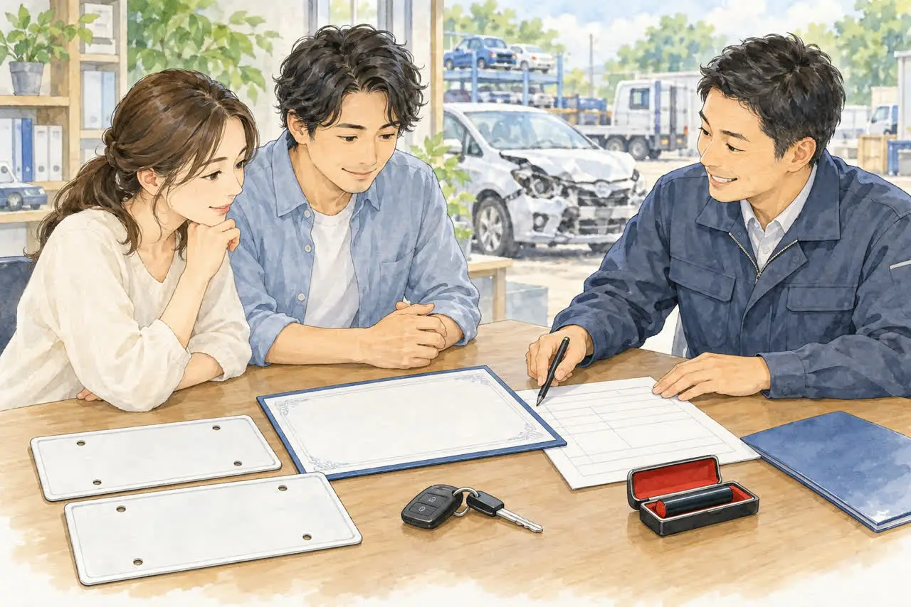

事故にあってしまった方へ
事故を起こして車が動かないときの対応
レッカー・保険・車の処分の流れ
公開
こんにちは、足立区江北で自動車解体・廃車買取をしている「大崎商店 環七店」です。
「事故を起こして、車が動かなくなってしまった」
「レッカーはどこに頼めばいいの？」
「保険を使うと、保険料が上がってしまうのでは？」
事故のあとは、気が動転してしまうもので、何から手をつければいいのか迷いますよね。
この記事では、事故を起こして自走できなくなった車について、事故直後の対応、レッカーの手配、保険の使い方、そして車を手放すときの流れを、順番にやさしくご紹介します。
まずは安全の確保と、警察・保険会社への連絡

事故にあったときは、車の処分や修理より先に、次のことを行ってください。
- 安全を確保する
まず停止し、周囲の状況を確認して、二次事故を防ぎます。動かない車を無理に動かしたり、危険な車道に出たりしないでください。 - けが人を救護し、必要なら119番へ
けが人がいる場合は救急車を呼び、指令員の指示に従ってください。 - 110番で警察へ連絡する
事故の大小にかかわらず、警察への届け出が必要です。現場の場所やけが人の状況などを伝え、指示を受けます。 - 保険会社へ連絡する
安全確保・救護・警察への連絡を優先したうえで、事故の状況を伝え、搬送や今後の進め方を相談します。
高速道路では、車内や車のそばで待たず、ガードレールの外など安全な場所へ避難してください。 停止表示器材などの設置で危険にさらされないよう、人の安全を最優先にしてください。
車を手放すかどうかは、これらが落ち着いてから考えて大丈夫です。
自走できないときは、レッカーで移動します

事故で自走できなくなった車は、レッカー車や積載車で搬送します。レッカーを頼める先は、主に次のとおりです。
① 任意保険のレッカーサービス
ご契約の任意保険にロードサービスが付いていれば、契約で定められた範囲内で、自己負担なく搬送できる場合があります。 自動的に付いている契約と、特約への加入が必要な契約があります。保険会社に連絡するときに、「車が動かないので、レッカーをお願いしたい」と伝えます。
- 保険会社によって、無料で運べる距離や、条件が違います
- 距離が長い場合や、特殊な作業が必要な場合は、自己負担になることがあります
- 修理工場やご自宅など、希望する運び先を相談できます。ただし、搬送先にも契約上の条件があります
- 自分で業者を手配する前に、保険会社の指定窓口へ連絡してください。 事前連絡なしで手配すると、費用が対象外になる場合があります
くわしい内容は、ご契約の保険会社にご確認ください。
② JAFなどのロードサービス
JAFの会員の方は、事故や故障でのけん引・搬送を、会員サービスとして受けられます。運び先は、ご希望の場所を伝えられます。ただし、距離が長い場合は、お断りされることがあります。
③ 大崎商店が、事故現場へ引き取りに伺う
事故車や動かない車は、ふだんから現地まで引き取りに伺っています。動かない車を引き取りに行くのと同じ扱いで、買取や費用は通常の引き取りと同じ考え方でご案内します。
ただ、事故現場は、車を早く動かす必要があることがほとんどです。修理・販売・解体の作業や、ほかの引き取りの予定が重なり、お店の都合で、すぐに伺えないこともあります。 いつまでに車を動かしたいかを、お電話でお知らせください。お急ぎの場合は、レッカーで入谷店へ運んでいただければ、すぐに受け入れられます。
廃車にする方針が決まっている場合は、入谷店への搬送も相談できます
廃車にする方針が決まっている場合は、保険会社やJAFのレッカーで、大崎商店の入谷店へ搬送する方法もあります。事前に当店へ受け入れ日時を確認し、保険会社には当店への搬送がロードサービスの対象になるか確認してください。保険で補償を受ける予定がある場合は、売却・解体についても担当者の確認を受けてください。
- 当店の引き取りを待たずに、車を移動できる場合があります
- 保険のロードサービスの対象になり、契約の条件内であれば、自己負担なく搬送できる場合があります
- 持ち込まれた車をそのまま受け入れて、買取や引き取りの手続きを進められます
当店の受け入れ確認後、レッカーの手配窓口へ、「運び先を、大崎商店の入谷店にしたい」 とご相談ください。
入谷店：東京都足立区入谷7丁目5−11（TEL：03-3899-2837）
電話は、営業時間内にお願いします
事故のあとは、すぐに動かなければならないことがほとんどです。ただ、お電話の受付は、営業時間内（月〜土 9:30〜17:30、日曜・祝日・第2土曜は休業）のみです。レッカーを手配する前に、営業時間内にお電話をいただければ、運び先や持ち込みについてご案内します。
営業時間内にお話をして、引き取りまで話が進めば、営業時間外でも、引き取りには伺います。
これは当店が伺う引き取りについてのご案内です。レッカーでの持ち込みは、受け入れ日時を事前に当店と調整してください。夜間や休業日に事故にあった場合は、当店の営業開始を待たず、保険会社やJAFに安全な搬送先を相談してください。
ディーラーや販売店に運んだあと、廃車にする場合
購入したディーラーや販売店に、事故車を運んで、修理の見積もりを出してもらうこともあると思います。見積もりを見て、修理をやめて廃車にすると決めた場合は、後日でも、大崎商店が搬入先まで引き取りに伺います。 修理するかどうかは、先に搬送してから検討できます。搬入先には、保管料や引き取り時の条件も確認しておくと安心です。
搬入先への引き取りは、動かない車の引き取りと同じ扱いです。買取価格がつくか、無料で伺える範囲かなどは、通常の引き取りと同じ考え方でご案内します（「出張引き取りの対応エリア｜無料で伺える範囲は？」の記事をご覧ください）。
保険を使うと、保険料は上がる？
レッカーサービスを使うと保険料が上がるのでは、と心配する方も多いです。
レッカーサービス（ロードサービス）を使うだけなら、翌年の保険の等級は下がらないのが一般的です。 ただし、更新時の保険料は、契約条件や保険会社の料率改定などによって変わることがあります。
ただし、次の点にご注意ください。
- ロードサービスの利用と、事故の保険金の請求（車の修理代などを保険で支払うこと）は、別のものです。保険金を請求した場合は、等級に影響することがあります
- 保険会社によって、扱いが違うことがあります
保険の扱いは、ご契約の保険会社に、必ずご確認ください。
修理するか、廃車にするかは、保険会社に相談してから

事故で壊れた車は、修理するか、廃車にするかを決める必要があります。ご自身の車両保険や相手側の保険などで補償を受ける予定がある場合は、売却・解体する前に、保険会社の担当者へ確認してください。 車の損傷確認や、所有権の扱いについて調整が必要な場合があります。全損として保険金を受け取る場合、契約によっては保険会社が車を引き取ることもあります。
搬送先を決める際には、保険会社による車の確認が終わるまで保管が必要かどうかも、担当者と搬送先に相談してください。
「修理代が高くて、直すより手放したほうがいいかも」と思ったときも、先に保険会社に確認しておくと安心です。
廃車にすると決まったら、大崎商店へ
廃車にすると決まったら、大崎商店へご相談ください。事故車の買取や引き取り、費用、必要な書類については、「足立区で事故車を買い取ってもらうには？動かない車でも大丈夫」 の記事で、くわしくご紹介しています。
簡単にご説明すると、次のとおりです。
- 自走できて、壊れ方が軽い車：修理して販売できる場合があり、高価買取になることがあります
- 自走できない車：損傷の程度や修理費などを確認して、再利用できるか、解体して廃車にするかを判断します。解体して廃車にする車は、条件を満たすと、重量税の還付金や自賠責保険の返戻金が見込めます。大崎商店では、これらの見込額を買取価格に含めて、手続きを当店にお任せいただく方法をご案内しています（含めた分は、当店が受け取る扱いになります。ご自身で手続きして受け取る方法も選べます）
- 買取価格がつかない場合：環七店から車で片道約30分圏内なら、無料で引き取ります。引き取りや廃車手続き、解体の費用はかかりません。範囲外は、所在地と車の状態を確認してご案内します
廃車に必要な書類

普通車
- □ 車検証の原本
- □ ナンバープレート（前・後ろの2枚）
- □ 所有者の印鑑登録証明書（発行から3か月以内）
- □ 所有者の実印
軽自動車
- □ 車検証の原本
- □ ナンバープレート（前・後ろの2枚）
軽自動車では、印鑑登録証明書や実印は不要です。
車検証の所有者が販売店やローン会社などになっている場合は、別途確認や書類が必要になることがあります。普通車も、車検証と現在の住所・氏名が異なる場合などは、追加書類をご案内します。
事故現場からお電話をいただく場合、書類は手元にないのがふつうです。
事故にあったとき、実印や印鑑証明書を持ち歩いている方は、ほとんどいません。そのため、事故当日に引き取りや持ち込みをする場合は、書類は後日お願いすることになります。 当日にそろえていただく必要はありません。
- 普通車：実印や印鑑証明書が必要なため、後日、必要書類を提出していただきます。
- 軽自動車：車検証とナンバープレートだけで対応できます。処分すると決まったら、処分までの流れはとても簡単です
委任状や譲渡証明書は、当店で用意します。事故で車検証をなくしてしまった場合も、廃車を進められることがあります。「車検証をなくしたけど廃車できる？」の記事をご覧ください。
よくある質問
Q. 事故現場まで、引き取りに来てもらえますか？
A. はい、ふだんから現地まで引き取りに伺っています。ただ、事故現場は車を早く動かす必要があり、修理・販売・解体の作業やほかの引き取りの予定が重なると、すぐに伺えないこともあります。いつまでに車を動かしたいかを、お電話でお知らせください。お急ぎの場合は、保険会社やJAFのレッカーで入谷店へ運んでいただければ、すぐに受け入れられます。
Q. 夜や休みの日に事故にあいました。どうすればいいですか？
A. お電話の受付は、営業時間内のみです。まずは安全確保、けが人の救護、警察への連絡を優先してください。当店の営業開始を待たず、保険会社やJAFに安全な搬送先を相談してください。営業時間内にお電話をいただき、引き取りまで話が進めば、営業時間外でも引き取りに伺います。
Q. ディーラーに車を運んで、修理の見積もりを出しています。修理をやめたら、引き取ってもらえますか？
A. はい、後日でも、大崎商店が搬入先まで引き取りに伺います。決まりましたら、お電話ください。
Q. レッカーを頼んだら、費用はかかりますか？
A. ご契約の任意保険にロードサービスが付いていれば、契約の条件内で自己負担なく搬送できる場合があります。利用できる範囲や搬送先、自己負担額を、手配前に保険会社へ確認してください。JAFの利用も、会員資格や搬送距離、作業内容などによって費用が異なります。
Q. レッカーを使うと、保険の等級は下がりますか？
A. ロードサービスを使うだけなら、等級は下がらないのが一般的です。保険会社によって異なることがあるので、ご確認ください。
Q. まだ修理するか、廃車にするか決まっていません。
A. 先に保険会社に相談してください。廃車にする方針が決まったら、大崎商店へご相談ください。保険で補償を受ける場合は、売却・解体の前に、保険会社の担当者の確認が必要です。
事故のあとの車のことは、大崎商店にご相談ください
事故のあとは、やることが多くて大変だと思います。車の処分については、大崎商店にご相談ください。レッカーの運び先や、買取・引き取りの流れを、お電話でご案内します。
- 廃車手続きの代行・解体の費用は無料
- 買取価格がつかない車も、環七店から片道約30分圏内は引き取り無料（範囲外はご相談ください）
- 事故車、動かない車も引き取り
- 車種や状態によっては、引き取り当日その場で現金買取も可能
大崎商店 環七店
電話：03-3854-4141
〒123-0872
東京都足立区江北7丁目1−3
営業時間：月〜土 10:30〜18:00
休業日：日曜・祝日
環七沿い／舎人ライナー
西新井大師西駅
大崎商店 入谷店
電話：03-3899-2837
〒121-0836
東京都足立区入谷7丁目5−11
営業時間：月〜土 9:30〜17:30
休業日：日曜・祝日・第2土曜
お電話の際は、「事故を起こした車の引き取りについて」とお伝えください。車種と、車が今どこにあるかがわかると、ご案内がスムーズです。
※掲載のイラストはAIで作成したイメージです。実際の事故現場や店舗、車両を撮影したものではありません。
参考：東京海上ダイレクト・自動車保険のレッカーサービスと等級への影響／JAF・ロードサービスの搬送先の指定／JAF・自動車保険のロードサービスとの違い／警察庁・交通の方法に関する教則／JAF・高速道路で事故や故障が発生した場合／SOMPOダイレクト・全損時の補償と所有権